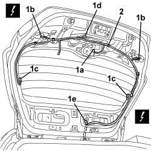
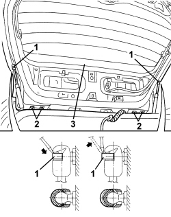

7210E56 R.R. TAILGATE
- Path
- Procedures > 72 PANELS AND FRAMES > 7210 REMOVING-REFITTING > 7210E EXTERNAL PARTS > 7210E56 R.R. TAILGATE
- Kind
- repair procedure (removal / refitting; the operation number is the code)
- Applies to
- all engines; all production periods
- Interactive page
- https://sloeber94.github.io/elrnDB/alfa/159/en/#/939005553
Applies to: all engines; all production periods
 Removing
Removing
 Refitting
RefittingOp. 7040G36 BULB HOLDER FOR LOAD CARRYING COMPARTMENT lighting on tailgate - R.R.
Op. 7015A05 TAILGATE LOWER INTERIOR PANEL-R R
Op. 7015A06 TAILGATE UPPER INTERIOR PANEL - R.R.
Op. 7210G76 REAR SPOILER - R.R.
1. Lower the tailgate and release the rear windscreen washer pipe duct seal (1a), by pushing it downwards.

Applies to: all engines; all production periods
- Raise the tailgate.
1. Disconnect the electrical connections (1a, 1b, 1c, 1d).
Description | Component |
|---|---|
REAR WIPER MOTOR | |
LEFT REAR LIGHT CLUSTER (MOVING SECTION ON BOOT LID) | See F035 LEFT REAR LIGHT CLUSTER (MOVING SECTION ON BOOT LID) |
RIGHT REAR LIGHT CLUSTER (MOVING SECTION ON BOOT LID) | See F036 RIGHT REAR LIGHT CLUSTER (MOVING SECTION ON BOOT LID) |
HEATED REAR WINDSCREEN | |
BOOT LOCK GEARED MOTOR | |
ADDITIONAL REAR LIGHT (THIRD BRAKE LIGHT) |
2. Disconnect the wiring from the tailgate retainers.

Applies to: all engines; all production periods
1. Release the duct seal (1a) and extract the wiring (1b) from the tailgate, passing it through the opening (1c).
2. Extract the rear windscreen washer pipe (2a), from the tailgate.

Applies to: all engines; all production periods
1. Support the tailgate appropriately then, using a screwdriver, release the telescopic struts upper retaining clips (without detaching them).
2. Undo the bolts fixing the tailgate to the hinges.
3. Remove the tailgate.

Applies to: all engines; all production periods
Refitting
Removing- Check that the tailgate is not damaged.
- Position the tailgate and screw in the hinge fixing bolts without tightening them.
- Attach the upper parts of the telescopic struts and clip the retaining clips.
- Insert the rear windscreen washer pipe correctly in the tailgate.
- Fit the wiring into the tailgate and fasten the duct seal.
- Connect the wiring to the tailgate retainers.
- Connect the electrical connections.
- Lower the tailgate and fasten the rear windscreen washer pipe duct seal.
Op. 7210G76 REAR SPOILER - R.R.
Op. 7015A06 TAILGATE UPPER INTERIOR PANEL - R.R.
Op. 7015A05 TAILGATE LOWER INTERIOR PANEL-R R
Op. 7040G36 BULB HOLDER FOR LOAD CARRYING COMPARTMENT lighting on tailgate - R.R.
Op. 7015A14 TAILGATE - ADJUST CENTRING AND PROFILE - INCLUDES HINGE AND COMPARTMENT SEAL ADAPTATION
Topics linked from this page (11)
- 7015A05 TAILGATE LOWER INTERIOR PANEL-R R
- 7015A06 TAILGATE UPPER INTERIOR PANEL - R.R.
- 7015A14 TAILGATE - ADJUST CENTRING AND PROFILE - INCLUDES HINGE AND COMPARTMENT SEAL ADAPTATION
- 7040G36 BULB HOLDER FOR LOAD CARRYING COMPARTMENT lighting on tailgate - R.R.
- 7210G76 REAR SPOILER - R.R.
- F035 LEFT REAR LIGHT CLUSTER (MOVING SECTION ON BOOT LID)
- F036 RIGHT REAR LIGHT CLUSTER (MOVING SECTION ON BOOT LID)
- F040 ADDITIONAL TAIL-LIGHT ('THIRD BRAKE LIGHT')
- N016 REAR WINDOW WIPER MOTOR
- N057 BOOT LOCK GEARED MOTOR
- P055 HEATED REARSCREEN